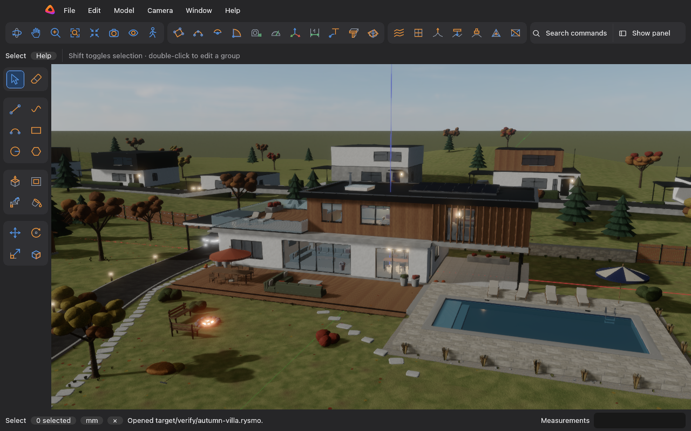

Buildings, rooms and furniture drawn to exact sizes. Draw on the model, push and pull faces, and type sizes as you go.
Free and open source. The editor runs in the browser, nothing to install.

Lines and shapes snap to faces, edges and axes. Push and pull a face to give it depth.
Type a length, an angle or a count while you draw.
Export to OBJ, glTF, COLLADA and DXF, or to STL and 3MF for 3D printing.
Modelling
Draw a closed shape on any face and push or pull it to give it depth.
Everything snaps to endpoints, faces, axes and guides.
Move, Rotate and Scale also make copies. Type 5x for five.
Union, subtract, intersect, trim and split two closed groups.
Edit one window and every copy changes. A component can cut its own opening in a wall.
Ground from scratch or from contour lines.
Dimensions, labels and 3D text. The tape measure places guides.
Measurements
Just type while a tool runs, no need to click the box. Metric, feet and inches, or fractions down to 1/64".
125cmA length with units5' 3 1/2"Feet and inches4.2,3.5Width and depth of a rectangle5xFive copies24sSegments of a circleMaterials and light
Brick, wood, concrete, metal, grass and paving, or your own PNG and JPEG. Drag pins on a face to place the texture.
Sun or studio light with shadows. Sky, fog and glowing lamps.
Save views and switch between them with tabs.
Cut through the model for plans and elevations without changing it.
Export
| Format | Use it for |
|---|---|
| glTF (.glb) | Game engines, Blender, the web |
| OBJ + MTL | Almost any 3D program |
| COLLADA (.dae) | Older 3D tools |
| DXF (.dxf) | CAD programs |
| STL, 3MF | 3D printing, with a check for holes and inside-out parts |
git clone https://github.com/MojzisekJan/rysmo
cd rysmo
cargo run -p rysmo_app --release